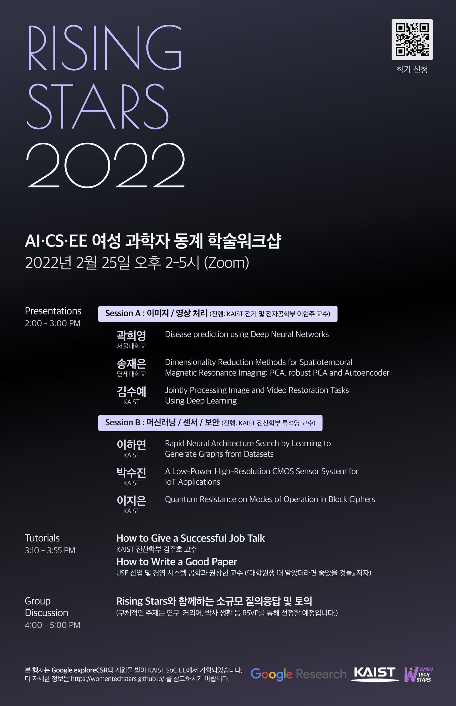

행사 소개
2022년 2월 25일 금요일, Google의 지원을 받아 국내 대학 AI/CS/EE 분야 여학생을 대상으로 [Rising Stars 2022] AI/CS/EE 여성 과학자 동계 학술워크샵이 개최 될 예정입니다.
본 워크샵에서는 AI/CS/EE 분야의 여성 대학원생들이 자신의 연구를 발표하고, 피드백을 받으며, 연구 및 진로에 대한 이야기를 다양하게 나눌 수 있습니다. 또한, 교수님들께 직접 논문과 발표를 잘하는 방법 등에 대해 들을 수 있는 강연 시간이 마련되어 있습니다. 우리나라의 미래를 책임질 AI/CS/EE 분야의 학부생 및 대학원생들의 많은 관심과 참석 부탁드립니다!
- 행사 일시: 2022년 2월 25일 (금) 오후 2~5시
- 참여 대상: AI/CS/EE 분야의 대학원생 및 해당 행사에 관심 있으신 학생분들
- 행사 구성: [1부] Rising stars 논문 발표
[2부] 강연
[3부] 소그룹 토크
본 행사는 Google exploreCSR의 지원을 받아 기획되었습니다.
본 워크샵에서는 AI/CS/EE 분야의 여성 대학원생들이 자신의 연구를 발표하고, 피드백을 받으며, 연구 및 진로에 대한 이야기를 다양하게 나눌 수 있습니다. 또한, 교수님들께 직접 논문과 발표를 잘하는 방법 등에 대해 들을 수 있는 강연 시간이 마련되어 있습니다. 우리나라의 미래를 책임질 AI/CS/EE 분야의 학부생 및 대학원생들의 많은 관심과 참석 부탁드립니다!
- 행사 일시: 2022년 2월 25일 (금) 오후 2~5시
- 참여 대상: AI/CS/EE 분야의 대학원생 및 해당 행사에 관심 있으신 학생분들
- 행사 구성: [1부] Rising stars 논문 발표
[2부] 강연
[3부] 소그룹 토크
본 행사는 Google exploreCSR의 지원을 받아 기획되었습니다.
